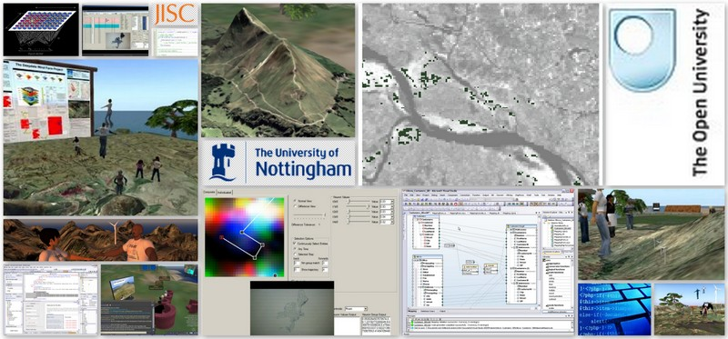
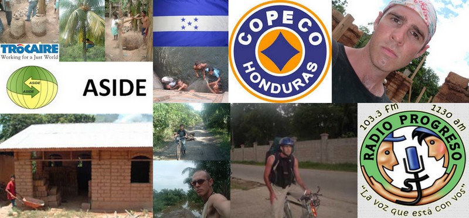
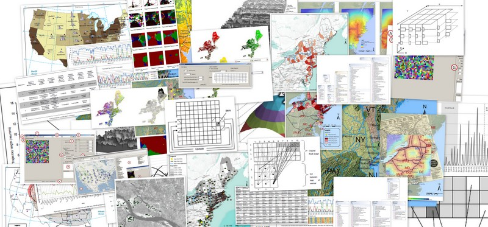

-
Teaching and Training
IT Instructor @ Euro Training, London. Course Designer and Instructor @
Alcatel & International House, Madrid. Instructor @ University of Nottingham.
- 
Software and Solutions Development
GIS, spatial intelligence, computer learning, environmental analysis, discovery, pattern recognition, neural networks, collaboration in virtual worlds.
Sales & Service
Number 1 salesperson @ Serif Software. Troubleshooter – placating especially difficult customers @ Dixons/Curries Mastercare. Postmaster and switchboard @ HM Civil Service.
- 
Community Development & Sustainable Construction
One year in Honduras & Bangladesh including six months in isolated rural lowlands. Liaised with multiple government and non-governmental organisations.
- 
Spatial Analysis
Expert in many forms of analysis including chloropleth, centroid, diffusion, regression, Gi(d), distance-velocity, spatial lag, autocorrelation, PCA, MDS, K-means, SOM.